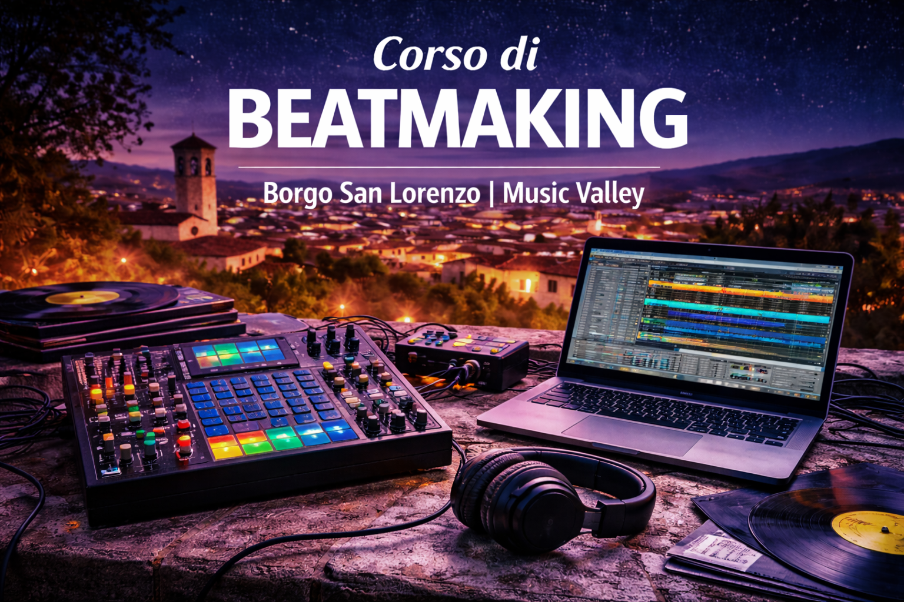

Corso di Beatmaking a Borgo San Lorenzo

Il corso di Beatmaking di Music Valley è dedicato a chi vuole imparare a creare beat professionali partendo dall’ascolto, dalla cultura musicale e dalla sperimentazione sonora. Un percorso pratico e creativo che unisce tradizione hip hop e produzione contemporanea trap.
Ascolto, groove e cultura musicale
Il beat nasce prima di tutto dall’ascolto consapevole. Durante il corso si analizzano groove storici, produzioni old school, strutture ritmiche e scelte timbriche che hanno definito il linguaggio dell’hip hop e della musica urban.
Dalla cassa e rullante classici ai pattern moderni della trap, ogni elemento viene studiato per comprenderne il funzionamento, l’impatto emotivo e la resa sonora.
Ableton Live e produzione digitale
Il software di riferimento del corso è Ableton Live, una delle DAW più utilizzate nel panorama internazionale. Gli studenti imparano a costruire beat da zero, programmare batterie, lavorare con MIDI, automazioni ed effetti, organizzare una sessione professionale e finalizzare un brano.
Grande attenzione è dedicata al workflow creativo: rapidità, organizzazione e sviluppo dell’idea musicale fino al prodotto completo.
Sampling old school e produzione trap
Il sampling è uno dei pilastri del beatmaking. Si studiano tecniche di campionamento old school, chopping, manipolazione del suono e trasformazione creativa del materiale originale.
Accanto alla tradizione, spazio alla produzione trap moderna: 808, hi-hat rolls, sound design digitale e costruzione di atmosfere contemporanee.